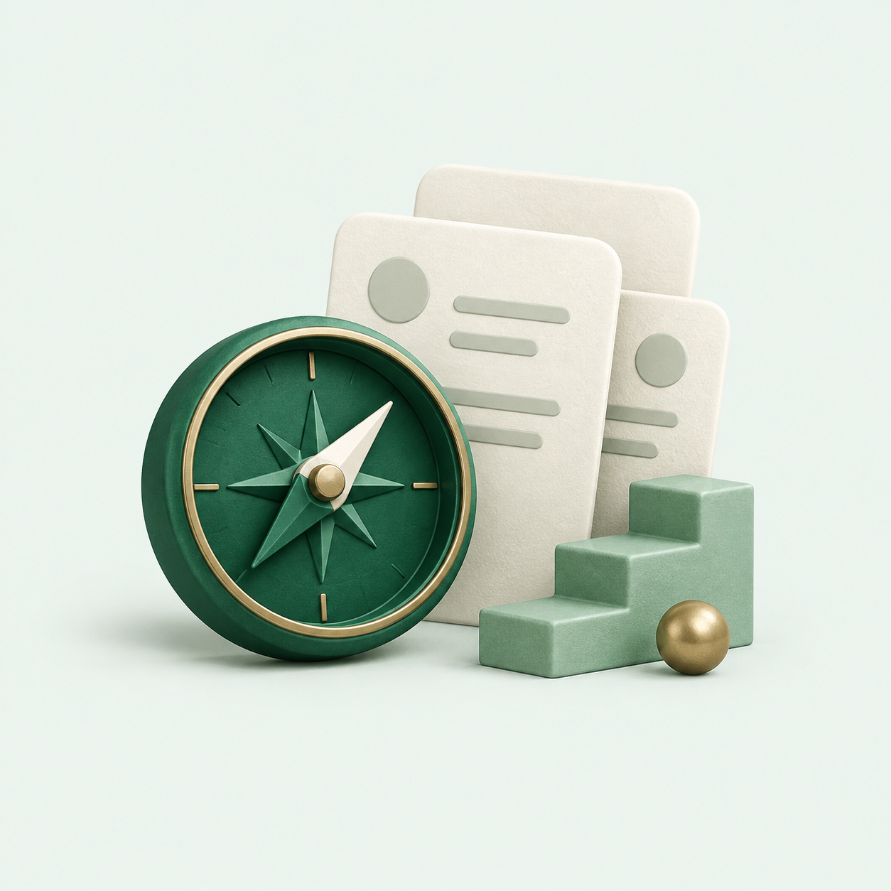

Instala Job Hunter en un par de minutos.
Un solo comando, sin instalar Python ni tocar configuraciones raras. Después lo abres desde un icono en tu escritorio.

Solo necesitas
Abre PowerShell
Pulsa Win + R a la vez. En el cuadro Ejecutar que aparece, escribe
powershell y pulsa Enter. Se abre una ventana azul o negra para escribir comandos.
No hace falta abrirla como administrador.
Pega este comando y pulsa Enter
Usa el botón Copiar y pega en PowerShell con clic derecho o Ctrl + V.
irm https://raw.githubusercontent.com/ambrociocastanazag-ctrl/job-hunter/main/install.ps1 | iexEn uno o dos minutos, y sin que tengas que hacer nada más:
- Descarga Job Hunter en C:\Users\<tu usuario>\JobHunter
- Instala la versión de Python que necesita, solo para Job Hunter (no toca nada más de tu PC)
- Crea el icono Job Hunter en el escritorio y en el menú Inicio
- Abre Job Hunter por primera vez
powershell -c "irm https://raw.githubusercontent.com/ambrociocastanazag-ctrl/job-hunter/main/install.ps1 | iex"
Abre Job Hunter cuando quieras
Haz doble clic en el icono Job Hunter del escritorio. Se abre una ventana negra
(el servidor) y tu navegador en http://127.0.0.1:5000.
Configura qué buscar
La primera vez te aparece una bienvenida. Lo más fácil es Ayúdame a configurarlo: copias un texto, lo pegas en tu IA (ChatGPT, Claude, Gemini…), respondes sus preguntas y arrastras a Job Hunter el archivo que te entregue. Antes de guardar ves un resumen de todo lo que cambia.
También puedes ajustar todo a mano, sin tocar código:
- Configuración: tu perfil, modalidad, sitios, palabras clave, ubicaciones, habilidades y puntaje mínimo
- Avanzado: filtros, pesos del puntaje, detección de tecnologías y parámetros de ejecución
Lanza la primera búsqueda
La primera búsqueda trae vacantes de los últimos 30 días. En Historial y búsquedas, elige el modo inicial y pulsa Ejecutar ahora. Verás el avance en vivo.
(Opcional) Avisos por Telegram
Escríbele a @BotFather →
/newbot → copia el token. Mándale cualquier mensaje a tu bot y abre
https://api.telegram.org/bot<TOKEN>/getUpdates para ver tu chat_id.
Pon los dos en Avanzado → Notificaciones.
(Opcional) Búsquedas automáticas
En Horarios eliges qué días y a qué hora buscar. Los horarios corren mientras Job Hunter está abierto. Si quieres que se abra solo al encender la computadora (minimizado, sin abrir el navegador), pulsa Instalar en esa misma página.
Listo
Job Hunter está corriendo en tu máquina, buscando vacantes con tu configuración.
Actualizar o desinstalar
Actualizar: cierra la ventana de Job Hunter y vuelve a pegar el mismo comando del paso 2. Tus vacantes, tu configuración y tus credenciales de Telegram se conservan.
Desinstalar: si activaste el inicio automático, desactívalo primero en Horarios. Después borra la carpeta C:\Users\<tu usuario>\JobHunter y los iconos Job Hunter del escritorio y del menú Inicio. No queda nada más instalado.
Para desarrolladores: instalación manual
Con uv y Git. El proyecto necesita
Python 3.12, porque python-jobspy fija numpy==1.26.3, que no tiene binarios para 3.13+.
git clone https://github.com/ambrociocastanazag-ctrl/job-hunter.git
cd job-hunter
uv venv .venv --python 3.12
uv pip install --python .venv\Scripts\python.exe -r requirements.txt
.venv\Scripts\python.exe dashboard\app.pyPruebas: .venv\Scripts\python.exe -m pytest tests/ -v. La CLI (main.py --mode daily|initial|export|stats)
está documentada en el README.